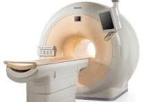
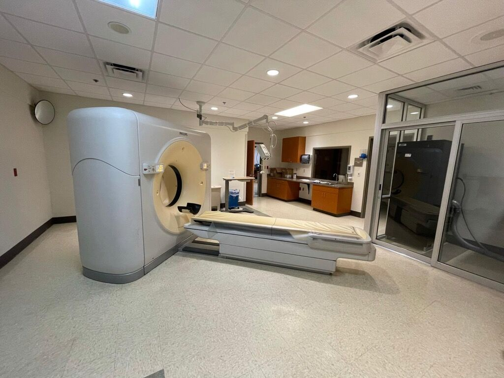
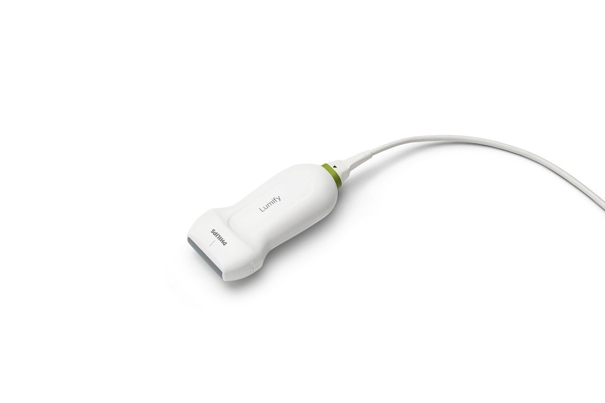
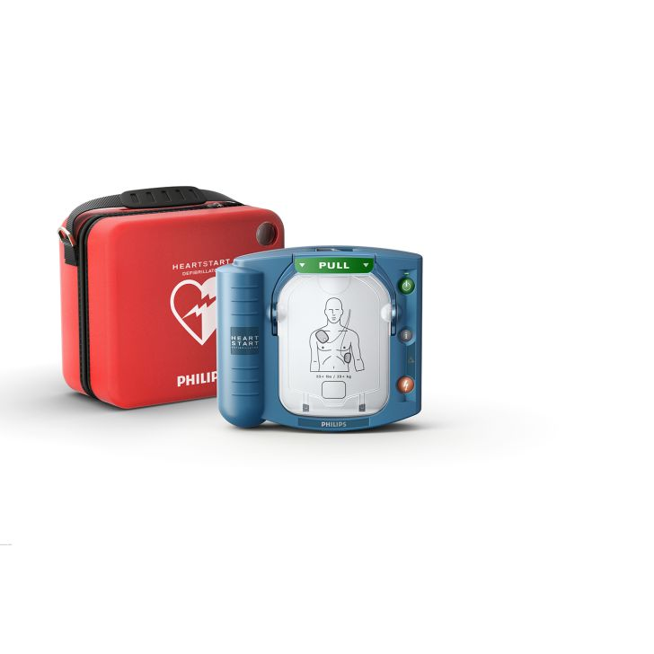
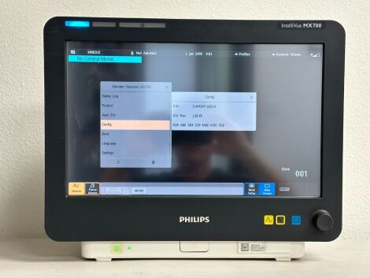

The problem Philips is solving
Philips's installed base of imaging and monitoring equipment is ageing and growing, which grows the demand for spare parts — but Philips has no named, branded predictive-service product, and trails GE HealthCare and Siemens Healthineers on artificial-intelligence-cleared devices. Both roles exist to fix this: build a data- and artificial-intelligence-driven service-parts supply chain from scratch, and grow parts-sales revenue without hurting delivery performance — inside a company running a parallel €1.5 billion cost-cutting program.
Key conclusions
The company
Royal Philips, global health-technology company, headquartered in Amsterdam. 2025 group sales €17.8 billion (+2% comparable sales growth). 64,800 employees worldwide. Second-quarter 2026: €4.4 billion in sales, +4% comparable sales growth.
Role 1 — SPS Supply Chain Design, Analytics and AI Leader
The role
Own SPS process and data architecture design principles; build and integrate a newly formed global organization across locations and multiple management layers; shape and scale the artificial-intelligence agenda; drive parts-sales growth alongside delivery performance.
The opportunity
A newly formed organization with no existing structure to inherit — success is measured on moving artificial-intelligence use cases past proof-of-concept to scaled business value, and growing parts sales alongside delivery performance.
Role 2 — SPS Diagnostic Imaging (DI) Operations Leader
The role
Lead the newly established SPS DI Operations team across the DXR (Digital X-Ray), CT (Computed Tomography) and MR (Magnetic Resonance) businesses; own service-parts availability and operational supply-chain performance end-to-end, connecting customer needs with planning and supply.
The opportunity
Also a newly formed team — the stated priorities are strengthening planning to reduce lead times and prevent backorders, managing the parts portfolio through its full lifecycle, and growing parts sales alongside delivery performance.
Company context
€2.5 billion in productivity savings delivered 2023–2025; a further €1.5 billion program runs 2026–2028, with €258 million already delivered in the first half of 2026. Chief Operations Officer Willem Appelo, in the role since 2022, owns end-to-end operations, supply chain and manufacturing group-wide.
Contents
- Key Philips spare-parts & supply-chain challenges
Ageing installed base, growth vs. delivery performance, the artificial-intelligence gap, and a parallel cost program.
- Philips, the market & the competition
2025 & 2026 sales, segments, revenue evolution, service-parts competitive comparison against GE HealthCare and Siemens Healthineers, and key opportunities for Philips.
- 3 structural challenges
No inherited team · matrixed influence with no direct authority · scaling artificial intelligence inside a cost program.
- What SPS (Service Parts Supply Chain) owns
Scope per the posting and who the role partners with.
- Job posting & Olga's experience — both roles
Nine accountability areas, each row pairing the job-posting responsibility with Olga's matching experience — plus parts-sales growth levers and a 5-step priority stack.
- Leadership
Chief Executive Officer, Chief Operations Officer and Head of Service Parts Supply Chain — verified names & sources.
- KPI framework — Design, Analytics & AI role
Six groups: fulfillment, forecasting & inventory, data architecture, artificial-intelligence adoption, commercial, team & organization build.
- KPI framework — DI Operations Leader role
Three groups: parts availability & fulfillment, planning & inventory discipline, portfolio lifecycle & growth.
01
An ageing installed base to keep supplied
- The average age of major US imaging equipment is rising: CT scanners around 12 years, MRI systems, linear accelerators and PET/CT scanners around 14 years, as of 2022
- Slower replacement cycles mean more of the active fleet runs past its original service life — sustained, long-tail spare-parts demand on ageing systems
02
Growth and delivery performance, together
- The posting's own success measure ties parts-sales growth directly to "excellent parts-delivery performance" — not two separate goals to trade off against each other
- Growing sales without protecting fill rate and lead time would work against the same customer-experience standard the function is judged on
03
An artificial-intelligence gap versus imaging peers
- Philips has 38 US Food and Drug Administration-cleared artificial-intelligence devices, against 47 at Siemens Healthineers and 72 at GE HealthCare, as of October 2025
- The SPS artificial-intelligence agenda has to close ground, not just keep pace, while proving adoption beyond proof-of-concept
04
A parallel group-wide cost program
- The organization build and growth mandate run alongside Philips's own €1.5 billion productivity program for 2026–2028, on top of €2.5 billion already delivered 2023–2025
- New spend on organization-building and technology has to be justified inside a company actively cutting cost elsewhere
Five real Philips products — the installed base SPS supports
Hospital imaging & monitoring equipment, the DXR / CT / MR fleet this role's spare parts serve — used-market prices, real listings

Ingenia 3.0T MRI Scanner
$595,000
MR

Brilliance 64-Slice CT Scanner
$69,000
CT

Lumify Handheld Ultrasound
$6,000
Diagnosis & Treatment

HeartStart OnSite Defibrillator
$1,687
Connected Care

IntelliVue MX700 Patient Monitor
$495
Connected Care
2025 Group Sales
€17.8B
+2% comparable sales growth
Philips 2025 results
Employees Worldwide
64,800
31 December 2025. Philips 2025 results
Second-Quarter 2026 Sales Growth
+4%
Comparable sales growth, all segments. Philips second-quarter 2026 results
Productivity Program, 2026–2028
€1.5B
Target, on top of €2.5B delivered 2023–2025
Three segments — where SPS's parts network sits
2025 comparable sales growth, by segment
| Segment | What it includes | 2025 comparable sales growth |
|---|
| Diagnosis & Treatment | Diagnostic imaging, image-guided therapy, ultrasound, enterprise informatics | 0% |
| Connected Care | Hospital patient monitoring, ambulatory monitoring & diagnostics, sleep & respiratory care — the segment SPS's parts network serves | +3% |
| Personal Health | Personal care, oral healthcare, home care appliances | +8% |
Group sales — 2025 versus the latest quarter
| Metric | Full-year 2025 | Second quarter 2026 (latest) |
|---|
| Group sales | €17.8B | €4.4B |
| Comparable sales growth | +2% | +4% |
| Comparable order intake growth | +6% | −1% (large Connected Care orders shifted to the third quarter) |
| Productivity savings delivered | €850M (part of €2.5B delivered 2023–2025) | €132M (€258M in the first half of 2026, toward the €1.5B 2026–2028 target) |
Revenue evolution, five years — Philips vs. GE HealthCare, Siemens Healthineers, Medtronic
Each company's own currency and fiscal year; each chart scaled to that company's own highest year — not directly comparable across companies
Philips
Group sales, EUR, calendar year
GE HealthCare
Total revenue, USD, calendar year
Siemens Healthineers
Total revenue, EUR, fiscal year (ends 30 September)
Medtronic
Total revenue, USD, fiscal year (ends April)
Sources: Philips, GE HealthCare, Siemens Healthineers and Medtronic own annual results releases, 2021–2026, cross-checked against
stockanalysis.com.
Connected Care revenue growth — the segment SPS serves
Comparable sales growth, most recent periods. Ageing installed base (CT around 12 years, MR around 14 years) grows the addressable spare-parts base as it does.
Service-parts supply chain — Philips vs. GE HealthCare vs. Siemens Healthineers
The competitive set this role operates in. Medtronic excluded — implantables/disposables, no comparable multi-vendor parts program.
| Company | Named early-warning service | Paid service plans | Also repairs other brands' equipment | Artificial-intelligence devices cleared* | Opportunity for Philips |
|---|
| Philips |
No named service yet |
RightFit — guarantees 98% uptime on its top tier |
Yes — Managed Services |
38 |
- Give Philips's own early-warning service a real product name, the way GE and Siemens have
- Share real numbers about the size of its own repair network (how many parts, how many engineers) — Siemens already publishes 40,000+ parts and 500+ engineers
- Get more artificial-intelligence devices officially cleared to close the gap with GE and Siemens
- Talk publicly about the non-Philips-equipment repair work it already does, since Siemens is doing the same and getting credit for it
|
| GE HealthCare |
OnWatch Predict |
No public uptime guarantee found |
Yes — probe and repair training programs |
72 |
— |
| Siemens Healthineers |
Guardian (plus TubeGuard, ImageGuard for specific parts) |
Performance Service Plans |
Yes — Block Imaging, 40,000+ parts, 500+ engineers |
47 |
— |
Role Analysis
3 structural challenges this role is built to solve
01
No organization to inherit
- The posting names this explicitly: "build and integrate a newly formed global organization across locations, functions and leadership layers"
- Leading through multiple management layers, including managing managers, is required from day one — there is no existing team structure to step into
02
Influence without direct authority
- The posting requires "strong executive presence" to influence senior SPS, ISC, business and IT leaders "in a highly matrixed global environment"
- Trusted relationships have to be built across the Supply Chain CoE, the Service CoE and IT — none of them report into this role
03
Scaling artificial intelligence inside a cost program
- The mandate is to move artificial-intelligence use cases past proof-of-concept to scaled, adopted business value
- That build runs alongside a €1.5 billion group-wide productivity program through 2028 — €258 million already delivered in the first half of 2026
01
Core Processes & Digital Capability
Data architecture, analytics and digital capability for a high-performing service-parts supply chain.
02
Design Principles & Strategy
Process and data-architecture design principles and strategy for SPS overall.
03
End-to-End Supply Chain Concepts
Concepts and scenarios aligned to business-unit and regional strategy.
04
The Artificial-Intelligence Agenda
Identify high-value use cases, drive implementation, scale adoption.
05
Parts-Sales Growth
Grow parts-sales revenue alongside parts-delivery performance.
Partners with
Philips Supply Chain CoE (Center of Excellence) · Service CoE · Philips IT · Chief Operations Officer Willem Appelo's organization (end-to-end operations, supply chain and manufacturing group-wide)
SPS Supply Chain Design, Analytics and AI Leader
| Job-posting responsibility | Olga's matching experience |
|---|
| Supply Chain Design & Data Architecture — own SPS process and data-architecture design principles; create end-to-end supply-chain concepts. | PDEng (Professional Doctorate in Engineering) in Logistics & Supply Chain, TU Eindhoven. IBM: process design, material requirements planning and demand planning for four manufacturers. adidas: designed the European Union stock-point network. |
| Building a New Global Organization — build and integrate a newly formed global organization across locations, functions and leadership layers. | Richemont: built and led a 240+ full-time-equivalent team across 26 European countries. adidas: built the Digital Partner Commerce function from zero. |
| Data-Insights-Driven Transformation — transform SPS into a data-insights-driven supply chain; drive IT investment planning. | Richemont: built the omni-channel analytics cockpit. Nike: SAP Retail implementation for Intersport. IBM: SAP APO implementation for the Dutch Ministry of Transport. |
| The Artificial-Intelligence Agenda — identify high-value artificial-intelligence use cases, translate them into opportunities, drive adoption beyond proof-of-concept. | TrendsOnFire: founded and built an artificial-intelligence-powered market intelligence platform from the ground up — the same identify-translate-scale arc. |
| Driving Parts-Sales Growth — grow parts-sales revenue alongside excellent parts-delivery performance. | Richemont: full P&L ownership of a €150 million e-commerce business, delivering 30–250% annual revenue growth. Transformed the Client Relations Centre into a revenue-generating channel. |
SPS Diagnostic Imaging (DI) Operations Leader
| Job-posting responsibility | Olga's matching experience |
|---|
| Global Operations Leadership — lead the newly established DI Operations team across DXR (Digital X-Ray), CT (Computed Tomography) and MR (Magnetic Resonance), connecting customer needs end-to-end. | Richemont: built and led a 240+ full-time-equivalent team across 26 European countries. adidas: European Union Supply Chain Management leadership team. |
| Parts Availability & Portfolio Lifecycle — ensure parts availability and supply-chain resilience; manage the portfolio through its full lifecycle. | IBM: process design, material requirements planning and demand planning for four manufacturers. adidas: designed the European Union stock-point network. |
| Planning Discipline & Delivery Performance — reduce lead times, prevent backorders, grow parts sales alongside delivery performance. | Richemont: €150 million P&L, delivering 30–250% annual revenue growth through pricing, margin and operational levers. |
| Continuous-Improvement Culture — build a continuous-improvement culture in a brand-new team, partnering with Procurement, regional teams and field-service. | adidas: built the Digital Partner Commerce function from zero. Richemont: cross-functional partnership across e-commerce, client relations, anti-fraud and payment teams. |
Parts-sales growth — 5 levers
How parts-sales revenue grows without compromising parts-delivery performance. Benchmark column is market/industry data unless labeled as Philips's own.
| Lever | How it grows parts-sales revenue | Benchmark |
|---|
| Service agreement attach (RightFit) |
Converting reactive, one-off parts orders into multi-year RightFit service agreements with full parts coverage — planned, recurring parts revenue instead of unplanned single orders. |
98% uptime guarantee, Philips's own RightFit Protection tier |
| Artificial-intelligence-enabled predictive parts replacement |
Using equipment performance data to anticipate part failure and proactively ship the right part before breakdown — the same artificial-intelligence agenda this role owns, applied to revenue. |
+10–20% equipment uptime/availability gain from predictive maintenance (cross-industry, Deloitte) |
| Modernization & retrofit parts upgrades |
Upgrading components on an ageing installed base of imaging and patient-monitoring equipment extends operating life and captures higher-value parts revenue than routine break-fix orders. |
n/a — not separately disclosed |
| Digital / self-service parts ordering |
Moving routine parts reorders and contract renewals to a self-service channel frees field-service and desk capacity for higher-value account work. |
67% of industrial buyers now prefer digital ordering, up from 20% in 2017 |
| Multi-vendor managed-services cross-sell |
Philips Managed Services covers non-Philips equipment on a hospital's fleet too, expanding wallet share across the full multi-vendor installed base rather than Philips-branded devices alone. |
n/a — not separately disclosed |
Priority stack — 5-step approach
| # | Action | Why first | Output |
|---|
| 1 |
Map current state — audit today's process maturity, data architecture and CoE touchpoints across regions |
A newly formed organization needs a real baseline before it can be designed, not assumed |
Current-state baseline |
| 2 |
Design the target operating model — process and data architecture design principles, governance between the Supply Chain CoE, the Service CoE and IT |
The posting's own mandate is to own design principles and strategy, not inherit an existing model |
Target operating model |
| 3 |
Pilot the artificial-intelligence agenda on 1–2 high-value use cases — proof beyond proof-of-concept |
The posting's own bar is adoption past proof-of-concept, not another pilot that stalls |
Pilot results with measured business value |
| 4 |
Build and staff the organization — structure managers of managers across locations and functions |
Leading through multiple management layers is a named requirement, not an afterthought |
Staffed global organization |
| 5 |
Scale and embed — annual IT investment-planning cycle, parts-sales growth tracking, sustained productivity contribution |
Keeps the function compounding value as the group's 2026–2028 productivity program continues |
Standing planning & growth cadence |

Philips
Roy Jakobs
President & Chief Executive Officer
Appointed 15 October 2022; re-appointed at the 8 May 2026 Annual General Meeting

Philips
Willem Appelo
Chief Operations Officer
In the role since 2022; prior: Vice President Supply Chain Strategy, Innovation & Deployment, Johnson & Johnson; President, Global Delivery and Technology Group, Xerox
HS
Philips
Henry van der Schoot
Head of Service Parts Supply Chain
In the role since January 2020; leads the global Service Parts Supply Chain, delivering service parts for medical equipment to field service engineers and hospitals worldwide
RG
Philips
Rajasunath Gondi
Head of ISC (Integrated Supply Chain), International Regions
15+ years of international experience in integrated supply chain and procurement; based in Veldhoven, Netherlands
Parts availability & fulfillment
Fill rate
Share of part requests met immediately from stock on hand, without backorder or delay.
Industry benchmark: a fill rate above 95% is the standard target for consistent field-service fulfillment.
On time, in full
Parts delivered on the promised date and in the complete quantity requested.
Industry benchmark: a core fulfillment measure tracked alongside fill rate, since one can be bought at the expense of the other by holding more stock.
Emergency shipment rate
Share of part requests resolved through emergency procurement or expedited transfer rather than planned stock.
Industry benchmark: one of the core inventory-risk indicators service-parts teams are advised to track first.
Equipment downtime linked to parts
Downtime at hospitals and clinics attributable to parts unavailability rather than the repair itself.
Industry benchmark: a standard field-service measure wherever parts availability directly gates equipment uptime.
Forecasting & inventory
Forecast accuracy
How closely demand planning for service parts matches actual consumption.
Industry benchmark: 85–90% accuracy is a common target range for demand forecasting.
Inventory turnover
How many times service-parts inventory is used and replaced over a period — the standard counterweight to fill rate.
Industry benchmark: one of the five core inventory measures every supply-chain planner is advised to track.
Days of inventory outstanding
Average number of days parts sit in stock before use.
Industry benchmark: tracked alongside turnover as the standard inventory-efficiency pair.
Stock-out rate
Share of part requests that hit zero available stock at the point of need.
Industry benchmark: a direct downstream signal of forecast-accuracy and inventory-turnover performance.
Benchmarks are general supply-chain industry standards, not figures disclosed by Philips. Sources:
Netstock,
GetMaintainX.
Data architecture
Master data quality (completeness rate)
Share of critical master data fields — parts master, bill of materials, location and inventory records — meeting defined completeness and accuracy standards.
Industry benchmark: 95–99% is the typical target range for critical master data.
Systems integration coverage
Share of SPS systems and processes running on the standardized target architecture rather than siloed, point-to-point connections.
Industry benchmark: enterprises connect only around 28% of their applications on average — the baseline gap a standardized architecture is built to close.
Data ownership & stewardship coverage
Share of core SPS data domains — parts master, bill of materials, supplier records, location data — with a named, accountable data owner.
Industry benchmark: assigned ownership of critical data assets is considered the single most important data-stewardship KPI in a program's first year.
Design-principle compliance
Share of new SPS builds, tools and processes reviewed and approved against the function's own data-architecture design principles before go-live.
Internal reference: measured against the design principles and architecture strategy this role is mandated to define; no external benchmark applies to a newly formed function's own standard.
Artificial-intelligence & data adoption
AI (artificial-intelligence) use cases in production
Number of identified use cases that have moved from pilot to adopted, in-production tooling — the posting's own "beyond proof-of-concept" bar.
Data architecture coverage
Share of SPS processes running on the target data architecture versus legacy or manual structures.
Time-to-decision on IT investment requests
Speed of the annual IT investment-planning process this role drives, from request to funded project.
Analytics tool adoption by planners
Share of SPS planning and analytics staff actively using the tools this role builds, versus legacy spreadsheet-based work.
Internally defined against SPS's own use-case pipeline and architecture design principles — no external adoption-rate standard applies across companies.
Commercial & financial
Parts-sales growth
Revenue growth from service parts — the explicit commercial mandate named in the posting alongside delivery performance.
Service parts revenue per installed unit
Parts revenue generated per unit of Philips equipment in active service — a standard way field-service organizations track how well an installed base is monetized.
Productivity contribution
SPS's share of the group's €1.5 billion 2026–2028 productivity program.
Internal reference: the group delivered €258 million toward the target in the first half of 2026.
Cost per part delivered
Total logistics, warehousing and handling cost divided by parts shipped — the standard efficiency measure for a service-parts network.
Team & organization build
Organization stand-up milestones
Progress building the newly formed global organization across locations, functions and leadership layers — the posting's core people mandate.
Management-layer depth
Managers of managers in place, reflecting the posting's requirement to lead through multiple management layers.
Stakeholder trust & influence
Effectiveness building trusted relationships across SPS, IT, business and transformation organizations in a matrixed environment.
Team retention in the new organization
Retention of experts and people managers through the organization's first year, while it is still being built and integrated.
Parts availability & fulfillment
Fill rate
Share of part requests met immediately from stock on hand, without backorder or delay, across DXR, CT and MR.
Industry benchmark: a fill rate above 95% is the standard target for consistent field-service fulfillment.
On time, in full
Parts delivered on the promised date and in the complete quantity requested.
Industry benchmark: a core fulfillment measure tracked alongside fill rate, since one can be bought at the expense of the other by holding more stock.
Backorder rate
Share of part requests that cannot be met from planned stock — the posting's own "prevent backorders" mandate.
Industry benchmark: a direct downstream signal of forecast-accuracy and inventory-turnover performance.
Order-to-fulfillment lead time
Time from a part request to delivery at the field engineer or hospital — the posting's own "reduce lead times" mandate.
Industry benchmark: tracked alongside fill rate as the standard delivery-performance pair.
Benchmarks are general field-service industry standards, not figures disclosed by Philips. Sources:
SmartServiceOps,
Netstock.
Planning & inventory discipline
Forecast accuracy
How closely demand planning for DI service parts matches actual consumption.
Industry benchmark: 85–90% accuracy is a common target range for demand forecasting.
Inventory turnover
How many times DI service-parts inventory is used and replaced over a period — the standard counterweight to fill rate.
Industry benchmark: one of the five core inventory measures every supply-chain planner is advised to track.
Days of inventory outstanding
Average number of days DI parts sit in stock before use.
Industry benchmark: tracked alongside turnover as the standard inventory-efficiency pair.
Stock-out rate
Share of DI part requests that hit zero available stock at the point of need.
Industry benchmark: a direct downstream signal of forecast-accuracy and inventory-turnover performance.
Benchmarks are general supply-chain industry standards, not figures disclosed by Philips. Sources:
Netstock,
GetMaintainX.
Portfolio lifecycle & growth
Portfolio lifecycle coverage
Share of DXR, CT and MR parts phased toward end-of-service on a planned schedule rather than reactively — the posting's own portfolio-optimization mandate.
Internal reference: no external standard applies to a newly formed portfolio-management function.
Parts-sales growth
Revenue growth from DI service parts, alongside delivery performance — the same commercial mandate named in the Design, Analytics & AI role.
Industry benchmark: service-agreement attach carries a 98% uptime guarantee under Philips's own RightFit Protection tier.
Continuous-improvement cycle time
Speed of identifying, testing and embedding process fixes in a brand-new team — the posting's own culture mandate.
Internal reference: measured against the team's own baseline, since it is newly formed.
Team retention in the new organization
Retention of experts and people managers through the team's first year, while it is still being built and integrated.
Internal reference: no external standard applies to a newly formed team's first-year retention.